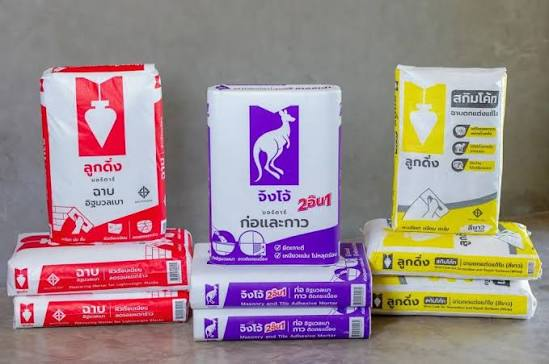
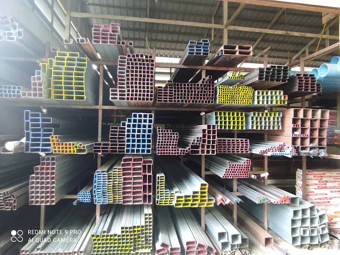
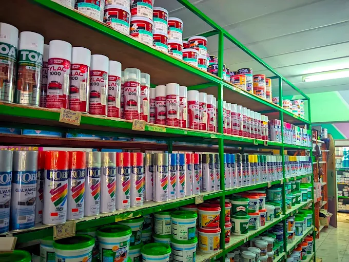
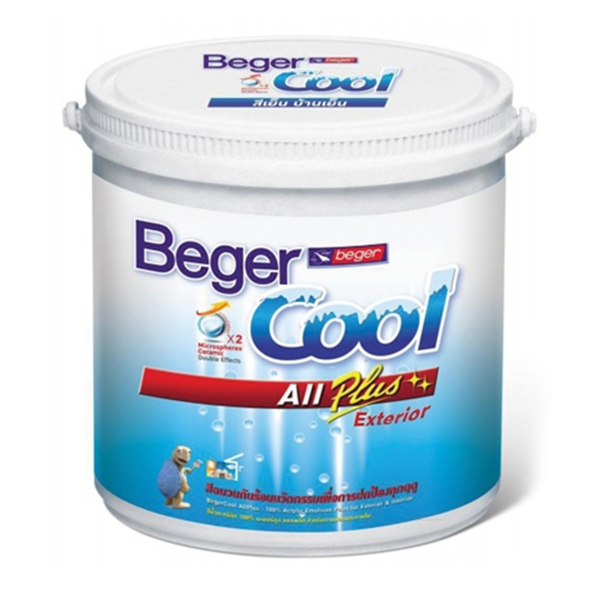
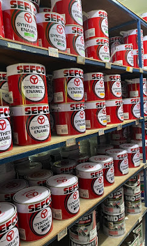
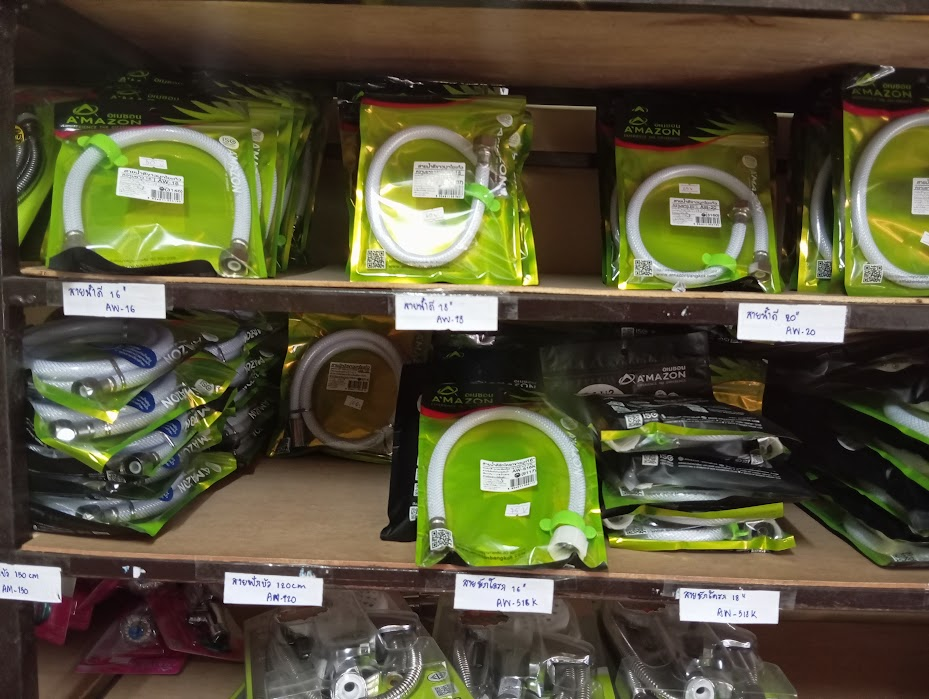
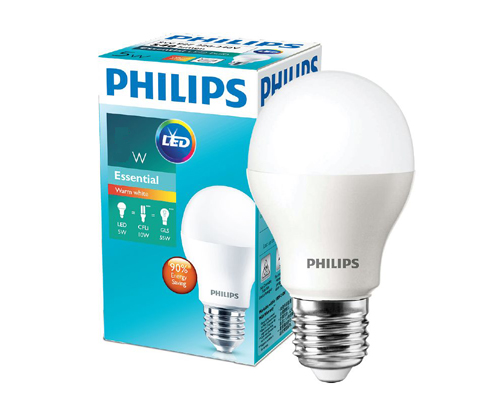
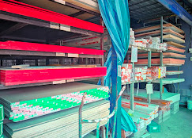
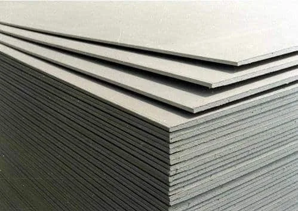
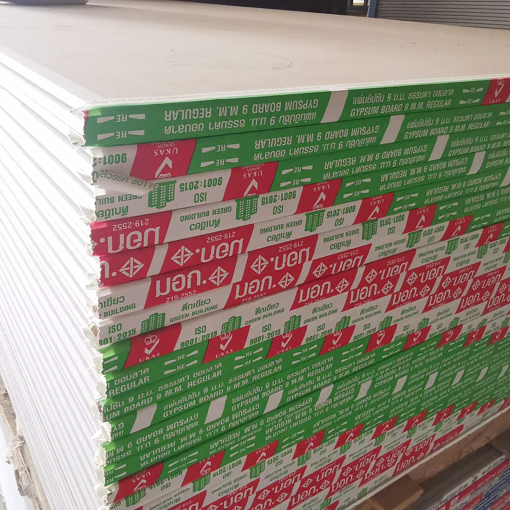

ปูน ทีพีไอ (TPI Cement)
เขียว (ปูนผสม): เหนียวลื่น ก่อง่าย ฉาบสวย ไม่แตกร้าว เหมาะกับงานก่ออิฐและฉาบปูนทั่วไป
แดง (ปอร์ตแลนด์ ประเภท 1): แข็งแรงสูง แห้งไว รับน้ำหนักได้ดีเยี่ยม เหมาะกับงานโครงสร้าง ฐานราก และคาน
มีปูนผสมทราย, ปูนสำเร็จ, ปูนมวลเบา, ปูนปูกระเบื้อง, ปูนยาแนว

เขียว (ปูนผสม): เหนียวลื่น ก่อง่าย ฉาบสวย ไม่แตกร้าว เหมาะกับงานก่ออิฐและฉาบปูนทั่วไป
แดง (ปอร์ตแลนด์ ประเภท 1): แข็งแรงสูง แห้งไว รับน้ำหนักได้ดีเยี่ยม เหมาะกับงานโครงสร้าง ฐานราก และคาน

(ปูนซีเมนต์สำเร็จรูป): แบ่งย่อยตามการใช้งาน (เช่น งานฉาบ, งานเท, งานก่ออิฐ) ควบคุมสัดส่วนผสมง่าย ช่วยให้งานเสร็จไว และได้มาตรฐานเสือ

แดง (ฉาบอิฐมวลเบา): เนื้อเหนียว นุ่ม ลื่น ฉาบง่าย ไม่แตกร้าว
ม่วง (2in1 ก่อ+กาว): เหนียวแน่น ยึดเกาะสูงใน 10 วินาที ไม่ต้องราดน้ำ
เหลือง (สกิมโค้ท): ฉาบบาง 1-2 มม. ผิวเรียบเนียนแกร่ง ขัดแต่งง่าย
.jpg)
เป็นผลิตภัณฑ์ปูกระเบื้องคุณภาพสูง ที่มีส่วนผสมของปูนซีเมนต์ปอร์ตแลนด์ ทรายคัดพิเศษ และสารเคมีเพิ่มประสิทธิภาพ คุณสมบัติเด่นคือ แรงยึดเกาะสูง แห้งตัวช้า ทำให้ขยับปรับแนวกระเบื้องได้ง่าย ไม่ต้องแช่กระเบื้องในน้ำ

(Cement-based tile grout) เป็นปูนซีเมนต์ปอร์ตแลนด์ผสมสารโพลิเมอร์และสารแต่งสีพิเศษ มีคุณสมบัติโดดเด่นด้านการยึดเกาะสูง ไม่หดตัว ทนทานต่อแรงดันน้ำและสารเคมี พร้อมสารยับยั้งราดำและตะไคร่น้ำ

ขนาด: 1/2", 3/4", 1", 2", 3", 4" | หนา: 1mm, 1.2mm, 1.5mm
เหล็กโครงสร้างรูปพรรณผิวเรียบเนียน ได้มาตรฐาน แข็งแรงทนทาน เหมาะสำหรับงานโครงสร้างทั่วไป
.jpg)
ขนาด: 1"x2", 2"x4", 3 x1 1/2" | หนา: 1.2mm, 1.5mm, 1.8mm
เหล็กแป๊บโปร่ง คุณภาพสูง เนื้อเหล็กหนาสม่ำเสมอ รองรับน้ำหนักได้ดีเยี่ยม

ขนาด: 40x40mm, 50x50mm | หนา: 3.0mm, 4.0mm, 5.0mm
เหล็กฉากชุบกัลวาไนซ์ ทนทานต่อการกัดกร่อนและสนิม เหมาะสำหรับงานภายนอกอาคาร
.jpg)
ขนาด: 1", 1 1/2", 2" | หนา: 3.0mm, 4.5mm, 6.0mm
เหล็กแบนรีดร้อน ผิวเรียบ ตรง ได้ฉาก เหมาะสำหรับงานเชื่อมและงานกลึงทุกประเภท
.jpg)
ขนาด (เส้นผ่านศูนย์กลาง): DB12, DB16, DB20, DB25
เหล็กเส้นกลมผิวมีบั้ง ช่วยเพิ่มแรงยึดเกาะกับคอนกรีต เหมาะสำหรับโครงสร้างพื้นฐานขนาดใหญ่
มี สีทาบ้าน, สีทาเหล็ก, สียอมไม้, สีสเปรย์, สีกันสนิม

สีทาอาคารยอดเยี่ยมระดับพรีเมียม ให้ความคงทน ปกปิดพื้นผิวได้ดีเยี่ยม ทนทานต่อทุกสภาวะอากาศ

สีสเปรย์แห้งไว ให้ความเงางามสูง ยึดเกาะแน่นหนาบนทุกพื้นผิวไม้และโลหะ

ภายนอก (Exterior): สะท้อนความร้อน 97% บ้านเย็นลง ช่วยประหยัดค่าไฟ ทนทานยาวนาน
ภายใน (Interior): กลิ่นอ่อนมินิมอล ฟอกอากาศบริสุทธิ์ เช็ดล้างง่าย ปลอดภัยต่อสุขภาพ
🎨 พิเศษ: มีเครื่องผสมสีคอมพิวเตอร์ที่ร้าน ลูกค้าสามารถเลือกสลับผสมสีที่ต้องการได้ตามใจชอบ!

ภายนอก (Exterior): ทนแดดทนฝน สะท้อนความร้อน ป้องกันเชื้อราและตะไคร่น้ำได้อย่างดีเยี่ยม
ภายใน (Interior): กลิ่นอ่อน ปลอดภัย เช็ดล้างทำความสะอาดง่าย เนื้อสีเนียนสวยคุมโทนบ้าน

คุณสมบัติ: แห้งไว ยึดเกาะแน่น ทนแดดทนฝน ป้องกันสนิมได้ดีเยี่ยม
สีเคลือบเงาคุณภาพสูง เหมาะสำหรับทาเคลือบผิวเหล็ก โครงสร้างโลหะ และงานไม้ทุกชนิด
Bathroom and Electric

สุขภัณฑ์และอุปกรณ์ห้องน้ำคุณภาพดี ดีไซน์ทันสมัย ตอบโจทย์ทุกการใช้งาน

สีฟ้า (Blue): ชั้นความหนา 13.5 และ 8.5 สำหรับระบบน้ำประปา ทนแรงดันน้ำสูง แข็งแรงทนทาน
สีเหลือง & สีขาว (Yellow & White): สำหรับเดินสายไฟและสายโทรศัพท์ ปลอดภัย ไม่ลามไฟ
สีเทา (Grey): สำหรับท่อระบายน้ำทิ้ง น้ำเสีย และระบบท่อระบายอากาศ (Air)

ประเภท: มีทั้งหลอดกลม (Bulb) และหลอดยาว (Long Bulb)
วัตต์ (Watt): มีให้เลือกหลากหลายวัตต์ตามความสว่างที่ต้องการ
คุณสมบัติ: ประหยัดไฟ เบอร์ 5 อายุการใช้งานยาวนาน คุ้มค่าราคาประหยัด

คุณสมบัติ: แบรนด์ระดับโลก ถนอมสายตา (EyeComfort) แสงนิ่งไม่กระพริบ
สินค้า: มีหลอด LED คุณภาพสูง, โคมไฟดาวน์ไลท์ และหลอดตกแต่งหลากหลายชนิด

VAF (สายขาว): สายแบนสองแกนหุ้มฉนวน เหมาะสำหรับเดินลอยเกาะผนังภายในบ้านทั่วไป
VCT (สายกลมดำ): สายกลมมีฉนวนหนาพิเศษ ยืดหยุ่นสูง ทนแดดทนฝน เหมาะสำหรับงานนอกอาคารและเครื่องจักร
THW (สายแกนเดี่ยว): สายเส้นเดี่ยวแกนแข็ง เหมาะสำหรับเดินร้อยท่อร้อยสายไฟในระบบไฟฟ้า

1. ไม้อัดทั่วไป (Ordinary Plywood):
มีขนาดหนา 3mm, 4mm, 6mm, 8mm, 10mm, 15mm โครงสร้างแข็งแรง ผิวเรียบ เหมาะสำหรับงานเฟอร์นิเจอร์และงานตกแต่งภายใน
2. ไม้อัดดำ (Film Faced Plywood):
มีขนาดหนา 8mm, 10mm, 15mm เคลือบฟิล์มกันน้ำ ทนทานสูง เหมาะสำหรับงานแบบหล่อคอนกรีตและการใช้งานกลางแจ้ง

• ไม้ฝา: สำหรับกรุผนัง ลายไม้สวย ทนปลวก ทนน้ำ ไม่หดตัว
• ไม้ระแนง: ตรงเรียบ ไม่บิดงอ เหมาะทำแผงบังตาและรั้ว
• ไม้บัว: เนื้อเหนียว ติดตั้งง่าย สำหรับเก็บรอยต่อพื้นและผนัง
• ไม้มอบ: น้ำหนักเบา ผิวเนียน สำหรับปิดรอยต่อฝ้าเพดาน
• ไม้เชิงชาย: หนาแน่น แข็งแรงพิเศษ สำหรับปิดขอบหลังคา ทนแดดทนฝน

• 8mm - 10mm: สำหรับงานผนังภายใน/ภายนอก และฝ้าเพดาน น้ำหนักเบา ติดตั้งง่าย
• 16mm - 20mm: สำหรับงานแผ่นพื้น ผนังโครงสร้าง แข็งแรงพิเศษ รองรับน้ำหนักได้ดีเยี่ยม
• คุณสมบัติเด่น: ผสมซีเมนต์และไม้ ผิวเรียบเนียน ทนปลวก ทนน้ำ ทนไฟ ไม่บวมแยกชั้น

• 4mm - 6mm: สำหรับงานฝ้าเพดาน ทั้งภายในและภายนอก ดัดโค้งได้ดี
• 8mm - 10mm: สำหรับงานผนังรับแรง ผนังกั้นห้อง แข็งแรง ทนแดดทนฝน
• 20mm: สำหรับงานแผ่นพื้นโครงสร้าง รองรับน้ำหนักได้สูงมาก
• คุณสมบัติ: ไฟเบอร์ซีเมนต์เหนียวพิเศษ ไม่บิดตัว ทนปลวก 100%

• ความหนา 9 มม.: ขนาดมาตรฐาน น้ำหนักเบา ผิวหน้าเรียบเนียนฉาบรอยต่อง่าย
• เงื่อนไขการขาย: สินค้าขายเป็นคู่ (แพ็คคู่)
• คุณสมบัติเด่น: มีฉนวนกันความร้อนในตัว บ้านร่มเย็น เหมาะสำหรับงานฝ้าเพดานภายใน

คุณสมบัติเด่น (Properties): สินค้ามาตรฐานสากล ผลิตจากเหล็กกล้าและทองเหลืองคุณภาพสูง ทนทานต่องานหนัก ปลอดภัย มั่นใจได้ในอายุการใช้งานที่ยาวนาน มีจำหน่ายพร้อมบริการแนะนำที่หน้าร้าน มงคลชัย ฮาร์ดแวร์ ครับ